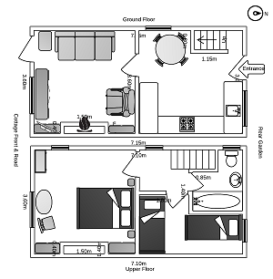

Floor plan

Included
- All bedding (sheets/ quilts)
- Washing machine
- Large towels
- 1 double bedroom / 1 single + extra single
- Log/Coal burner fire (see note below)
- Night Storage Heater in kitchen + electric heaters.
- Microwave Oven
- All kitchen utensils
- Electric cooker and fridge
- Off road parking (max of 2 cars)
- Use of the garden
- Wireless internet connection
- Electricity Used
- Colour Television / DVD player
- Stereo with CD/ Tape / Radio
- Bath and power shower.
- Hair dryer
If required
- Second single bed
- Baby travel cot
- Baby high chair
- Barbecue
- Garden furniture
- Mobile phone (pay as you go)
Prices for 2016
| From | To | Price |
|---|
| 8th January | 25th March | £300 |
| 25th March | 1st July | £350 |
| 1st July | 30th September | £410 |
| 30th September | 23rd December | £320 |
Payment by cash or cheque to "Stella Hasler", by bank transfer or by Paypal.
Surcharges
- A bank-holiday surcharge may be in place.
- A charge of £10 per week for dogs will be added.
- Coal - In winter and cold spells the fire will be made up on arrival and a supply of coal will be available. Additional bags of coal can be purchased at £11 each.
- Logs - if you prefer to burn logs we can also supply these - price on request.
- Deposit - A minimum £50 per a week non-refundable deposit is required (payment can be made in Euros)
How to find us
To get to us by car you will need to leave the M20 at Junction 8 (Lenham and Leeds Castle) on the A20. Follow the A20 for about ten minutes and you will see signs for Lenham village on the right. Opposite the second village turning there is a road to the left "Faversham Road" which is signposted for Doddington. Turn up this road and about ½ a mile on the right you will see a row of white cottages. Park in the fenced area just passed the last cottage and knock on the rear door of Number 4 for the key. For map of the area please use the link on this site.
Conditions for Rental
General
The hire contract is between the hirer and the owners, with whom the booking is made. The conditions of hire are set out below.
Payment
We expect a non-refundable deposit of £50 per week. The balance of the rental must be made on arrival - cash or cheque payable to Stella Hasler.
Hirer's Obligation
The hirer agrees to
- To pay for any breakages, losses of damage to the property before departure.
- To take good care of the property, and leave it in a clean and tidy condition at the end of the tenancy.
- To permit the owners reasonable access to the property to carry out maintenance and use of the washing machine.
- The maximum number of persons allowed at the property is 4 (excluding a baby); the owners reserve the right to terminate the hire without notice, and without refund in case of a breach of conditions.
- Smoking is not permitted within the cottage under any circumstances. Smokers can use the garden area but must dispose of butts appropriately.
Pets
Pets are welcome by prior agreement with the owners. The breed/type of dog must be declared prior to the booking being accepted. The following must be followed:
- Pet owners are responsible for any extra cleaning that may be required, either in the property or in the garden.
- Pets must not be allowed on soft furnishings or beds.
- Pets must have their own blankets and/or baskets to protect the floor covering.
- Pets shall not cause any annoyance or become a nuisance, or intimidate other occupants.
- Pets should not be left alone in the property (negotiable).
- Pets will not foul the garden; they can be taken to the adjoining field where mess must also be collected.
Cancellations
If the hirer wishes to cancel the booking, he/she must advise the owner immediately by telephone, followed by a letter of confirmation. Deposits paid are non-refundable.
Arrival and departure
The cottage will be available after 2pm on the day of arrival and should be vacated by 10.30am on the day of departure unless prior arrangements have been made with the owners.
Non-availability of property
If for any reason beyond the owner's control, the property is not available on the dates booked, all deposits paid in advance will be refunded in full. The hirer shall have no further claim against the owners.